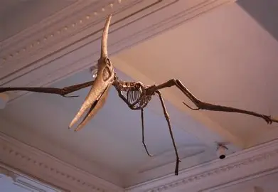
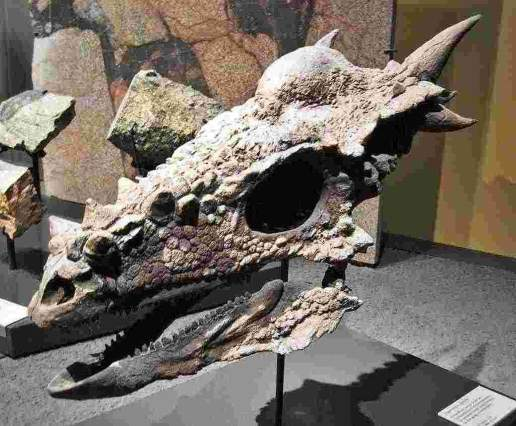
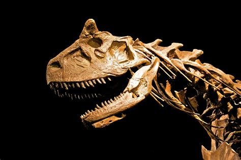
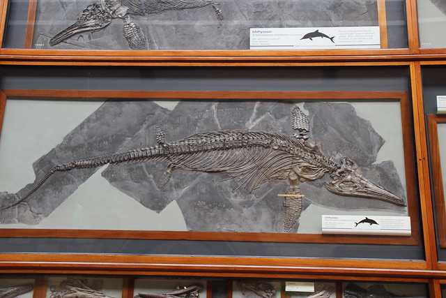
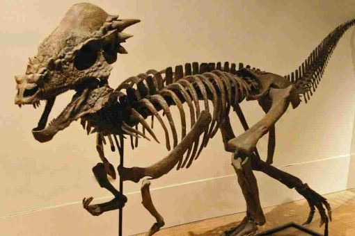

Dracorex, full name Dracorex hogwartsia was named by Bakker, Sullivan, Porter, Larson and Saulsbury in 2006, it is named after the fictional Hogwarts School in the Harry Potter books as its skull resembles a dragon due to its shape and spikes. Once it was considered a dinosaur, now it is considered a younger Pachycephalosaurus.

click the button to learn
Pteranodon is a type of flying reptile not a dinosaur, it was the first pterosaur to be found outside of Europe. The beaks were long, slender, and ended in thin, sharp points. Pteranodon, Pteranodon is a genus of pterosaur and there two types of them, Pteranodon longiceps and Pteranodon sternbergi the two species differ by the shape of their crest.

click the button to learn
Stygimoloch is a herbivorous dinosaur, it walks on two legs. Once it was considered a dinosaur, now it is considered a younger Pachycephalosaurus.

click the button to learn
Carnotaurus was a large theropod dinosaur, its name is derived from the latin carno [carnis] ("flesh") and taurus ("bull") due to its bull-like horns and that it was a carnivore. A unique part of the Carnotaurus are its two horns on its head.the purpose of them are currently unknown as all of them are now extinct, however scientists speculate that they may have been used to fight rivals , attack prey, identify other carnotaurus or even be used to attract mates. When it was first discovered, its bottom legs and majority of its tail were missing.

click the button to learn
Ichytiosaur was a marine reptile, In 1811 the first complete ichthyosaur skull was found by Joseph Anning, they give birth to live young instead of laying eggs. This discovered when baby Ichytiosaurs were found in female Ichytiosaur.

click the button to learn
Pachycephalosaurus lived in the Late Cretaceous Period of North America. Its a herbivorous dinosaur. It is likely that they ate a diet of leaves, fruit and seeds.However as their front teeth look a bit like those of carnivorous dinosaurs,scientists speculate that they could have also eaten meat as a part of their diet. In the past stygimoloch and decorex were considered their own dinosaur species however now they are considered to be younger Pachycephalosaurus based on the development of their skulls, dracorex and stygimoloch skulls are shown to be still developing and Pachycephalosaurus being fully developed.